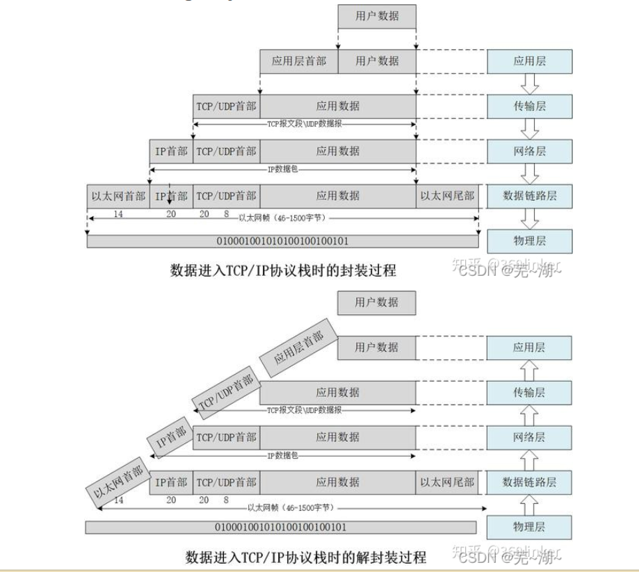
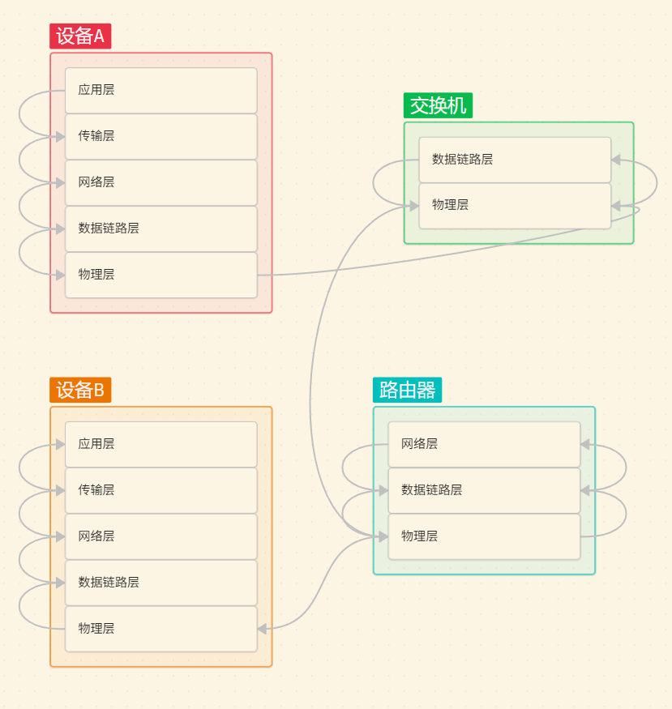

版权信息
warning
本文章为博主原创文章。遵循 CC 4.0 BY-SA 版权协议，转载请附上原文出处链接和本声明。
本篇仅作为我学习MQTT的前置知识学习，并不是专业讲解。
1. 计算机的通信——从网线开始
1.1. 网线
如果两台计算机想要通信，最简单的方法就是连接一根网线。
1.2. 集线器
如果计算机太多了，每台计算机都要和其他计算机之间连一根网线，这样的话网线就会显得错综复杂。
于是我们使用集线器，把所有网线都插在集线器上，由集线器把数据包广播出去——它仅仅是把数据包转发到所有出口，没有任何处理。
所以集线器的缺点显而易见：
- 信息会发送给所有设备。
- 多台设备同时发送消息会有干扰。
1.3. 交换机
交换机则是比集线器更智能的设备，交换机通过内部的MAC地址表来决定信息流向，接入交换机的设备都必须要有自己的MAC地址，MAC地址是设备出厂就设定好的、唯一的。
在一开始，由于MAC地址表是空的，交换机和集线器没有什么区别。
当设备A想要发送数据给设备B时，设备A在自己的发送的数据包的头部填入自己的MAC地址和目标MAC地址（设备B）。
当数据流经交换机时，交换机能识别出 设备A 的MAC地址并记录到 地址-接口映射表 中。由于交换机并不知道 设备B 的地址，它也会像集线器那样把数据广播给所有设备，设备解包后发现目标MAC地址与自己MAC地址不一样，选择不回应；而设备B发现目标MAC地址和自己的MAC地址一样，则回应，回应消息也要包含 自己的MAC地址 和 目标MAC地址（设备A），此时设备B的MAC地址被交换机更新到 地址-接口映射表。
此后如果再发送数据，则可以直接从A到B，不再广播数据。
这个广播数据的过程叫做“泛洪”（flooding）。
1.4. IP地址
MAC地址是与设备绑定的，如果更换网卡，MAC地址就变更了，交换机里关于该设备的记录就全部作废了。因此我们引入了IP地址。IP地址可以看作是MAC地址的抽象。通过IP地址如何通信呢？
同样以A向B发送消息为例。
- A发送数据——（自己的IP地址、自己的MAC地址、目标IP地址）+数据
- 交换机广播数据（转发到所有接口）
- 其他设备发现IP地址与自己的IP不符，不回应
- 设备B匹配到IP地址，把数据包中包含的 设备A的MAC地址 和 设备A的IP地址 绑定起来。
- 设备B发送回应消息——（自己的IP地址、自己的MAC地址、目标IP地址）+数据包
- 设备A收到回应，把收到的数据包中包含的 设备B的MAC地址 和设 备B的IP地址 绑定起来。
- 整个过程中，交换机也记录下了两台设备的MAC地址和对应端口。
- 知道了设备B的MAC地址，下次发消息，A就可以通过MAC地址配合交换机直达了。
这个由IP地址获得MAC地址的过程就是ARP协议，MAC地址与IP绑定的表就是ARP记录表。
1.5. 子网掩码
由于交换机的泛洪特性，我们可以把多台交换机串联起来，组成一个较大的计算机网络，可是再大也有极限，由于交换机会把所有经过的MAC地址保存起来，如果设备数量巨多，MAC地址表总有存不下的时候。
于是我们将网络隔离开来，将网络分成不同的网段。交换机只处理同一网段的消息。
这里就引入了子网掩码的概念。简单来讲，子网掩码就是用来判断两个IP是否属于同一网段的。IP地址和子网掩码作与运算会生成子网ID，子网ID相同的IP地址在同一网段。
例如：
| 子网掩码 | IP地址 | 子网掩码与IP地址做与运算 |
|---|---|---|
| 255.255.255.0 | 192.168.1.1 | 192.168.1.0 |
| 255.255.255.0 | 192.168.1.2 | 192.168.1.0 |
| 255.255.255.0 | 192.168.2.1 | 192.168.2.0 |
192.168.1.1 和 192.168.1.2 就在同一网段。192.168.2.0 对于前两者来说就是外网。
同样的情况下，如果子网掩码改为 255.255.0.0 计算机则会判断只要是 192.168.x.x 的IP的地址都在同一网段。
1.6. 路由器
前面提到交换机只处理内网的消息（同一网段），那内网发往外网的消息呢？路由器登场了！路由器的每个端口都有一个独立的MAC地址。
在内网的交换机的端口上会连着一个或多个路由器，它就是通往外界的桥梁。
当一台设备通过子网掩码得知消息要发给外网时，只需将消息通过交换机发给路由器即可。
设备之所以知道要交给哪个路由器，是因为设备的网关配置的是路由器的IP。网关，顾名思义就是网络的关口，向外网传达的消息都经过网关出去。
路由器收到消息后，下一步又把消息交给谁？路由器内维护一个路由表，可以配置“网段”和“下一跳”，用来决定各网段的消息下一步应该交由哪个路由器，这样各个路由器就可以通过接力的方式传到到目标网段的目标计算机。
路由表是手动配置的，路由设备增多，人工维护就会变得困难，于是有了 OSPF、BGF 等协议，能自动学习，自动管理路由表。
1.7. 总结
当发送信息时：
-
电脑视角
- 首先我要知道我的IP和对方的IP
- 通过子网掩码判断目标设备是否在同一网段
- 是，则直接通过交换机，配合ARP协议，使用MAC地址传输。
- 否，通过交换机，配合ARP协议，使用MAC地址发给网关。
-
交换机视角
- 收到数据包（必须包含目标MAC地址）
- 查MAC地址表
- 有记录，则直接转发给指定端口
- 无记录，则泛洪。
-
路由器视角
- 收到数据包（必须包含目标IP地址）
- 查路由表
- 有记录，则转发给指定端口
- 无记录，则返回一个路由不可达数据包
2. 网络的五层模型
网络是一个及其复杂的系统，功能十分繁杂，为了实现这个系统，我们需要采用分层的思想，分而治之。
我们就来看一下网络的经典五层模型，从上至下——应用层、传输层、网络层、数据链路层、物理层。

我们先来讲下面的三层——网络层、数据链路层和物理层。
结合第一节讲的内容，看看数据是如何在这个模型里流动的。还是一样的例子，设备A发送数据给设备B

2.1. 物理层
负责数字信号与模拟信号的转换。
假设我们的物理层设备是网口。
图中，设备A中的物理层将经过层层封装的数据包（比特流）转化为网口的差分信号并传输到交换机的物理层去。交换机的物理层接收到信号后又把它转为数字信号提供给数据链路层。
2.2. 数据链路层
负责相邻网络节点间的数据传输。点对点。
图中，交换机通过数据链路层解析出”MAC头“，配合MAC地址表，确定要发送到哪个端口（路由器端口），然后将数据包重新封装好，通过物理层发送给路由器。
2.3. 网络层
负责为数据从源到目的选择路由。端到端。
图中，路由器接收到交换机的比特流，通过数据链路层解析出MAC地址，通共比对解析出的MAC地址确认数据是发送给自己的，然后通过网络层解析出IP，通过路由表确定要发往的下一个节点，封装好IP（注意IP地址始终保持不变），此时又进入数据链路层，此时会修改MAC头部——源MAC变为自己的出口MAC，目的MAC变为下一个路由器的入口MAC。然后重新将数据包封装好，通过物理层发送出去。
2.4. 上层、下层与同层间的联系
下层为上层封装好接口，为上层提供服务。
两个设备的同层之间依靠通信协议传输数据，然后逐层向上，通过下层提供的服务解析出信息；两个设备的不同层之间不能传递数据。
至于传输层和应用层，且听下回分解。